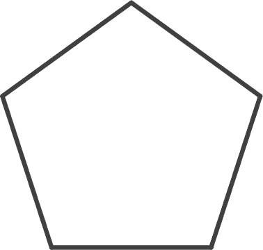

De regelmatige vijfhoek construeren
Door
Tijn Groninger
en
Jildert Hoekstra
jildert.com/studie/synthetischemeetkunde/eindpresentatie
Wat gaan we doen?
Basis
Kenmerken regelmatige veelhoeken
Regelmatige driehoek construeren
Vierkant construeren
Regelmatige zeshoek construeren
Verdieping
De ladder van Viète
Regelmatige vijfhoek construeren
Werkblad opgaven tussendoor
?
« Presentatie »
jildert.com/studie/synthetischemeetkunde/eindpresentatie
« Source Code »
github.com/jilderthoekstra/synthetischemeetkunde